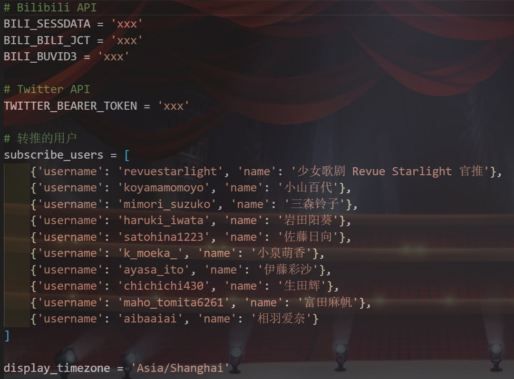

经过一段时间的运行和升级，转推bot目前已经达到较为平稳的状态。虽然还没有打包上PyPI的勇气，不过至少拿来直接用应该是没问题了。本教程针对有想法自己部署一个转推bot（将你关注的推特自动转发到B站动态）的人给出具体的操作指导。
前期准备
为了使转推bot能够工作，你需要有：
- 一个可以正常发动态的B站账号：不会有人没有吧
- 一个推特开发者账号：只要你有推特账号，就可以去推特的开发者平台申请成为开发者账号以获得调用推特API的权限。具体的申请流程和注意事项网上有很多教程，这里就不赘述了。需要强调的是推特开发者账号的申请是要经过人工审核的，且申请失败就不能再申请了，因此务必要慎重。
- 一个可以访问到不存在网站的神奇主机：懂的都懂。需要配置好Python3.7+环境。
部署流程
安装依赖
首先将twitter2bilibili代码clone到本地：
1 | git clone git@github.com:MichiyamaKaren/twitter2bilibili.git |
进入twitter2bilibili目录，安装依赖的Python库：
1 | pip install -r requirements.txt |
填写配置项
创建config.py文件，这是整个项目的配置文件。需要填写的配置项可以参照config_example.py文件

其中以BILI开头的三项为调用B站API所需要的身份认证信息，你可以在bilibili-api的文档中看到如何获取。
须知：bilibili-api所要求的这三个key是长期有效，但不是永久有效的。在网页端退出登录后，身份认证将会过期（直接关闭网页则不会），此时如果继续使用旧的key则会出错，会由接口返回错误代码-6。
TWITTER_BEARER_TOKEN是推特开发者账号的Bearer Token，在开发者平台上创建应用即可获取。
subscribe_users记录了要转推的推特账号，每一项代表一名用户，username为推特用户名（不是昵称），name为转推bot要显示的名字。
最后，display_timezone是转推bot要显示时间的时区，其应为pytz库所接受的时区格式。
运行
运行main.py文件，即可使转推bot开始运行。日志将会保存到t2b.log文件中。
个性化调整
如果你熟悉Python，你可以通过继承T2BForwarder类对转推bot的行为进行一些个性化修改。
T2BForwarder类介绍
T2BForwarder类负责处理接收到的推文（定义在tweet.py中Tweet对象），将其发送到B站动态。具体地说，其中包含了一个TwitterListener对象，负责通过推特API获取关注的推特用户的推文。而其handler方法就作为这个listener的回调函数，每当listener收到一条推文，它就会创建一个Tweet对象，交由handler处理。
不过事实上，处理推文的逻辑并不在handler方法之中。B站动态区的操作有三种形式：发动态、转发动态、发评论，因此handler会调用get_forward_action方法，这会根据接收到的Tweet对象内容判断要进行的行为，然后调用on_send_dynamic、on_repost或on_comment方法。发动态、转发动态或发评论的具体行为就在其中实现。
因此，如果要改变转推行为，那么应该重载的就是get_forward_action、on_send_dynamic、on_repost和on_comment方法。查看项目代码可以发现get_forward_action返回的不仅有行为（action，字符串），也有一个dynamic_id，而后三个方法接收的参数都是tweet和dynamic_id。这个dynamic_id参数就是用来实现B站动态的转发和评论，以及通过链接对动态进行引用的。如果需要更改接口，那handler方法也要被重载。
另外可重载的是query属性（通过@property装饰器定义），这是发送给推特Filtered Stream的query内容，描述了要请求的Tweet对象的哪些域。如果你的新功能需要请求不同的域，那么你会需要修改query。query的具体格式和含义见推特开发者文档。
如果你真的按照这篇教程用我的代码成功部署了自己的转推bot，请标注出项目地址。另外也请顺手给这个仓库点个star，这对我不是很重要，但还是求求你了。